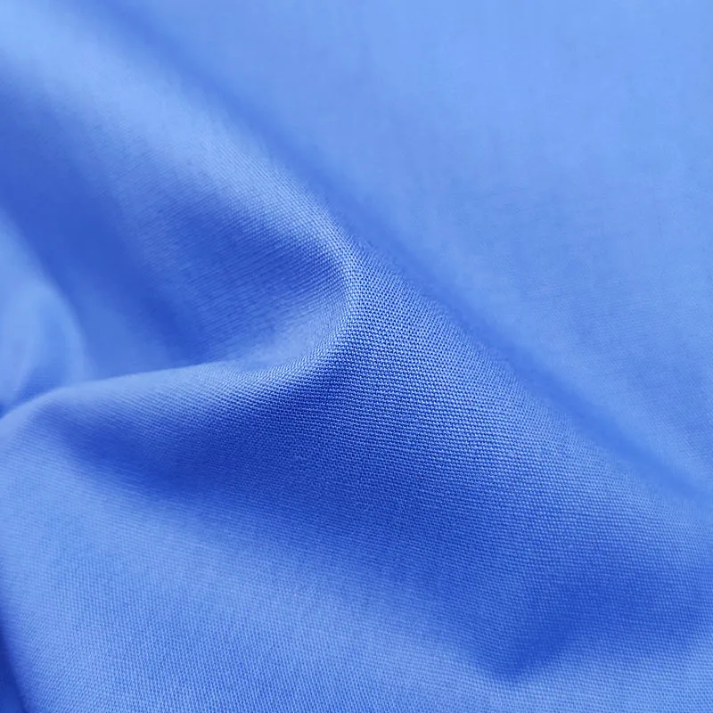
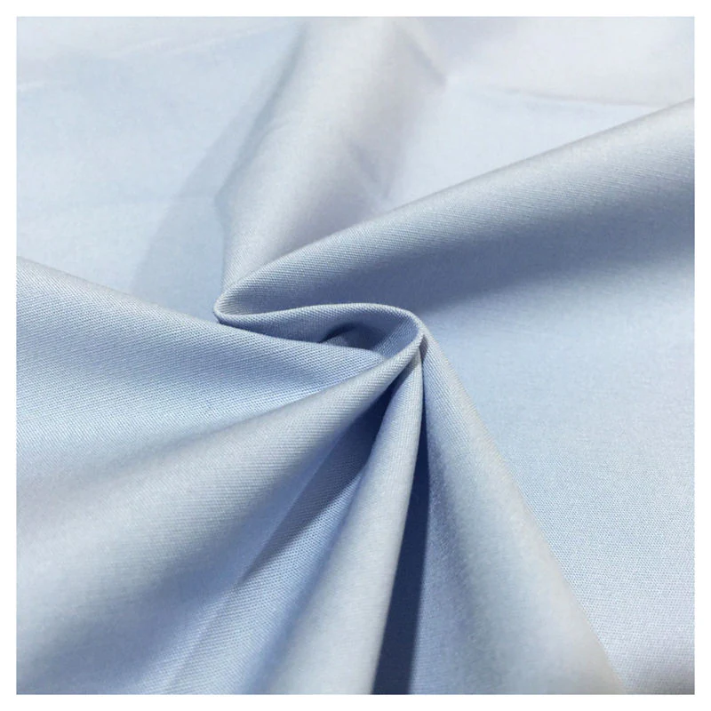
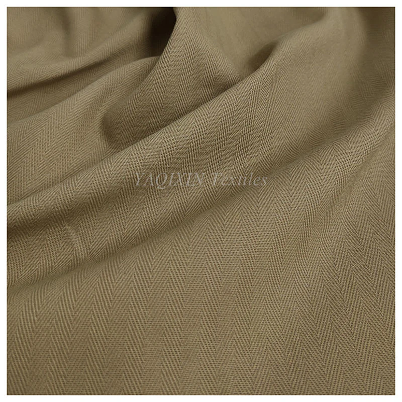
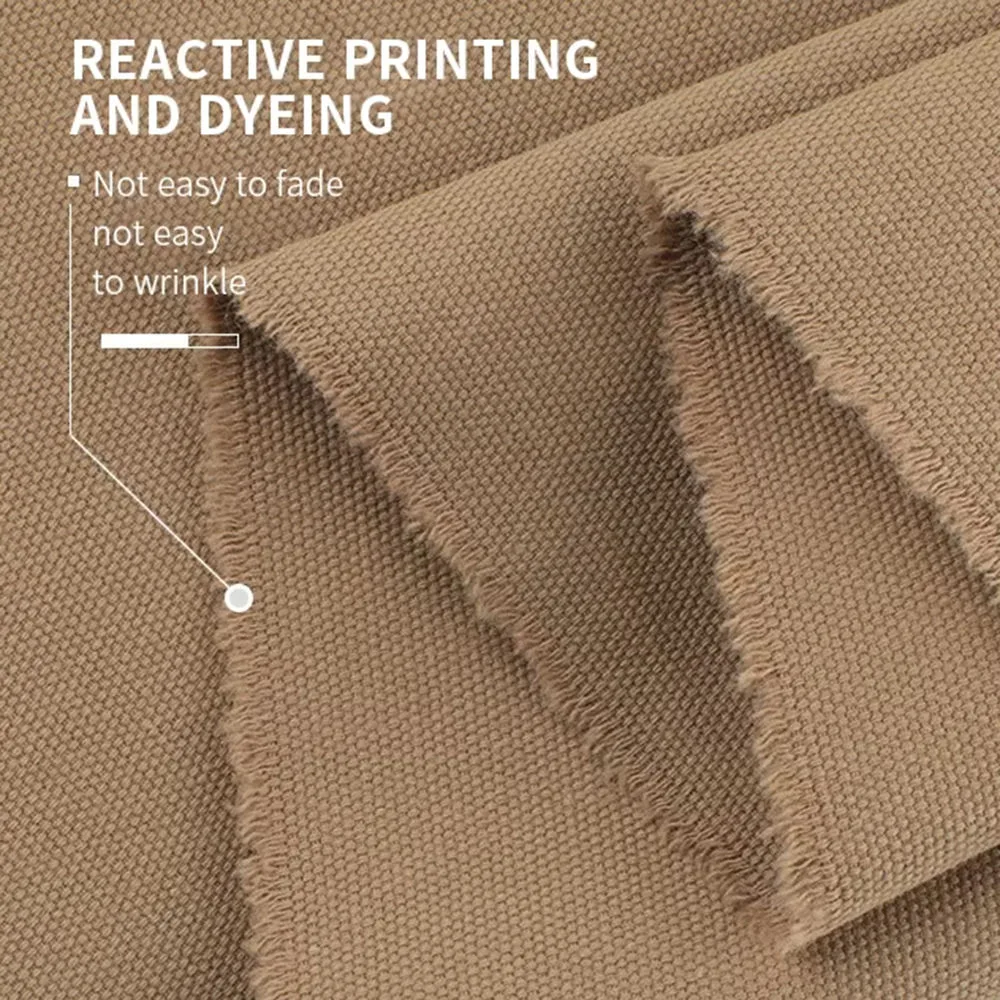

Cotton poplin, twill and canvas can all begin with cotton yarns and a woven construction, yet they solve different product problems. A buyer choosing only by fibre content can end up with a fabric that is technically “100% cotton” but too light for a tote, too bulky for a blouse or too rigid for the intended trouser silhouette.
Start with poplin for shirts, blouses, dresses and light garments that need a relatively clean, compact surface. Start with twill when trousers, jackets, uniforms or workwear need more body and a visible diagonal or herringbone character. Start with canvas when bags, structured garments or utility products need a firmer, more substantial base. Then select the exact weight, width, yarn count, finish and stretch from a physical sample.
Start with construction and end use—not cotton content alone
“Cotton fabric” is not a complete sourcing specification. Poplin is generally associated with a compact plain-weave surface and a cleaner shirt-fabric direction. Twill changes the interlacing pattern so a diagonal line—or a variation such as herringbone—becomes part of the structure and appearance. Canvas is selected for a stronger, more substantial body, but current canvas routes still range from lighter apparel-capable options to heavy bag and structured-product fabrics.
The useful first question is what the finished product must do. Does a shirt need a smooth surface and manageable seam bulk? Must a trouser retain shape while remaining comfortable? Will a tote carry weight and hold a defined form? Those answers narrow the category before color and price are discussed.

Category names are starting directions, not guaranteed performance levels. A stretch poplin can behave differently from a 100% cotton poplin. A washed chino twill and a double herringbone twill can share the same listed GSM while showing different surface character. A 7.5oz fine canvas and a 16oz canvas should not be treated as interchangeable simply because both sit under the Canvas Fabric category.
Compare body, drape and surface before comparing price
The three categories differ most clearly when a buyer compares the fabric as part of a pattern-sized panel. Poplin normally gives the lightest and cleanest apparel direction in this group. Twill usually supplies more body and a more visible structural line. Canvas moves further toward firmness and utility, although the lightest canvas route may still be considered for shirts or light jackets.
| Buyer decision | Poplin starting direction | Twill starting direction | Canvas starting direction |
|---|---|---|---|
| Typical product brief | Shirts, blouses, dresses, linings and light garments | Trousers, jackets, uniforms, workwear and structured shirts | Bags, totes, jackets, workwear and structured utility products |
| Visual surface | Clean, compact and relatively quiet | Diagonal or patterned twill character can be visible | More substantial woven character and stronger visual body |
| Pattern behavior to check | Coverage, drape, seam puckering and pressing | Shape retention, fold, abrasion areas and seam bulk | Rigidity, turning at corners, layer bulk and hardware compatibility |
| Common sourcing mistake | Selecting only by softness or color | Assuming equal GSM means equal surface and finish | Assuming every canvas is heavy enough for the same bag or workwear use |
Price should be compared only after the candidate routes are close enough in function. A lower price per metre is not a saving if the fabric requires an extra lining, creates unacceptable seam bulk or fails to hold the intended product shape. Compare usable width, cutting yield, rejected sections, finish, packing and freight implications alongside the quoted unit price.
Choose poplin for light, clean apparel routes
Poplin is a practical starting category for a buyer developing shirts, blouses, dresses or lighter uniform pieces. 125gsm cotton poplin | A9188 is listed as 100% cotton, 40s*40s, 125gsm and 155cm wide, with a 10-metre MOQ. Its product route is positioned for shirts, dresses and blouses, and the listed 400+ stock-color direction can help buyers begin shade sampling.
If the garment needs a small amount of movement, stretch cotton poplin | A1034 provides a different comparison. It is listed as 97% cotton and 3% spandex, 150gsm, 155cm wide and woven, with light stretch and a 10-metre MOQ. The stretch content should be tested in the actual pattern direction; it should not be assumed to replace fit development or a recovery test.

For poplin sampling, place the fabric over the intended underlayer and review opacity in the final color. Sew a representative placket, collar or curved seam. Check whether the finish responds to pressing as required and whether the surface shows needle marks, puckering or shine under the planned production process.
Choose twill for trousers, jackets and workwear structure
Twill is often the stronger starting direction when a garment needs more body than poplin without moving into a heavy canvas construction. washed chino cotton twill | A2188 is listed as 100% cotton, 16*12 yarn count, 270gsm and 150cm wide, with a 10-metre MOQ. Its current product positioning covers trousers, jackets, uniforms and workwear.
A buyer should still decide whether the washed appearance and hand feel match the product brief. Review color variation, surface character, seam bulk and how the fabric folds at waistbands, pockets and hems. If a more distinctive structure is wanted, double herringbone cotton twill | A2231 is also listed at 270gsm and 150cm wide, but with a 16*10 yarn count and herringbone surface direction.

This comparison is especially useful for buyers who receive several “270gsm cotton twill” quotations. Ask each supplier to identify yarn count, weave or pattern direction, finish, usable width, color reference and sample code. Without those fields, prices may describe fabrics that solve different garment requirements.
Choose canvas by the required level of structure
Canvas should be selected by the finished product's required body, not by the category label alone. The current catalog demonstrates a wide range. 7.5oz fine cotton canvas | A746 is listed as 100% cotton, 21*21 and 150cm wide for shirts, light jackets, bags and workwear. 220gsm cotton canvas | A2127 is also listed as 21*21 and 150cm wide, with a workwear, shirt, jacket and bag direction.
For a more substantial route, 11.5oz / 330gsm cotton canvas | A2350 is listed as 10s*10s and 150cm wide for jackets, coats, trousers and workwear. At the heavier end, 16oz cotton canvas | YX2381 is listed as 7*7, 150cm wide and intended for bags, shoes, totes and structured garments. Each current route has a listed 10-metre MOQ.

Do not convert an ounce listing into a precise GSM value unless the supplier has confirmed how the weight is stated. Keep the approved unit on the sample record. For bags and utility products, make a small construction mock-up with the actual lining, interfacing, zipper, binding and hardware. A flat swatch cannot reveal whether several layers will fit the sewing process or whether the finished item becomes unnecessarily heavy.
Map the product brief to a current route
The following table is a sourcing shortcut based on current listed specifications. It does not replace sample approval, and it does not claim that one route is universally better than another.
| Current route | Listed specification | Useful starting application | What to approve next |
|---|---|---|---|
| A9188 poplin | 100% cotton; 125gsm; 155cm; 40s*40s | Shirts, dresses and blouses | Coverage, hand feel, seam appearance and color |
| A1034 stretch poplin | 97% cotton / 3% spandex; 150gsm; 155cm; 40*40 | Shirts, dresses and light stretch apparel | Stretch direction, recovery, fit and pressing |
| A2188 washed twill | 100% cotton; 270gsm; 150cm; 16*12 | Trousers, jackets, uniforms and workwear | Wash direction, surface, seam bulk and color |
| A2231 herringbone twill | 100% cotton; 270gsm; 150cm; 16*10 | Jackets, shirts and trousers | Pattern visibility, direction, cutting and seam alignment |
| A2127 canvas | 100% cotton; 220gsm; 150cm; 21*21 | Workwear, shirts, jackets and bags | Body, fold, layer bulk and intended finishing |
| YX2381 canvas | 100% cotton; 16oz; 150cm; 7*7 | Bags, shoes, totes and structured garments | Hardware, corner construction, finished weight and packing |
Approve a production-relevant sample
A useful sample review compares the fabric under the same conditions in which it will be used. Follow the broader fabric sample inspection checklist, then add category-specific checks:
- Confirm composition, product code, yarn count, listed weight, usable width, color and finish against the supplier record.
- Cut the sample in the correct grain and orientation, especially when a twill or herringbone direction is visible.
- Sew the thickest production junction, not only one straight seam through two layers.
- Check pressing, wash or finishing behavior through the process planned for the garment or product.
- Compare the finished panel for coverage, drape, shape retention, surface marks and seam bulk.
- Record required testing or compliance documents as buyer requirements; do not assume them from a fabric name.
If weight numbers are difficult to compare, use the fabric GSM guide. Keep ounce-based canvas values in their confirmed unit and record both units only when the supplier documentation supports them.
Send a quote-ready cotton fabric brief
A supplier can quote more accurately when the inquiry describes the product rather than asking for “best cotton fabric.” Include the garment or product type, target category, reference SKU or swatch, composition, weight unit, usable width, color, finish, stretch requirement, sample quantity, estimated bulk quantity, destination and delivery window.
For example: “We are developing a medium-weight workwear trouser. Please compare a washed 270gsm cotton chino twill with a herringbone twill in a similar khaki direction. We need to approve surface, waistband seam bulk, pocket construction and color before confirming the bulk quantity.” A bag brief should instead state the desired shape, number of material layers, lining, hardware and whether the canvas must stand without additional support.
Buyer questions about poplin, twill and canvas
Is poplin always lighter than twill and canvas?
Poplin is commonly the lighter apparel starting direction in this comparison, but the exact result depends on the listed article. Compare weight, width, yarn count, finish and a physical sample rather than relying only on the category name.
Which fabric is better for workwear?
Twill is a practical starting route for trousers, uniforms and jackets that need body and garment flexibility. Canvas may be more suitable when the product needs a firmer utility construction. The correct route depends on the pattern, seam layers, finishing process and required performance tests.
Can canvas be used for apparel?
Yes. Current lighter canvas routes include shirt, jacket and workwear applications, while heavier routes are positioned for structured garments, bags and footwear. Approve the exact weight and construction in a cut-and-sewn sample.
Does equal GSM mean two twills are interchangeable?
No. A2188 and A2231 are both listed at 270gsm, but their yarn counts, finish direction and visible surface are different. GSM is one comparison field, not a complete specification.
What should a buyer send for a wholesale quotation?
Share the finished-product application, preferred category or reference SKU, composition, weight, width, color, finish, quantity, destination and required delivery date. Include a pattern detail or construction photo when seam bulk or product shape is important.
Ready to discuss a fabric brief?
Share your intended application, a reference image or swatch, quantity, and market. We can help you compare a stock or custom fabric route before you place a bulk order.
Start a fabric inquiry